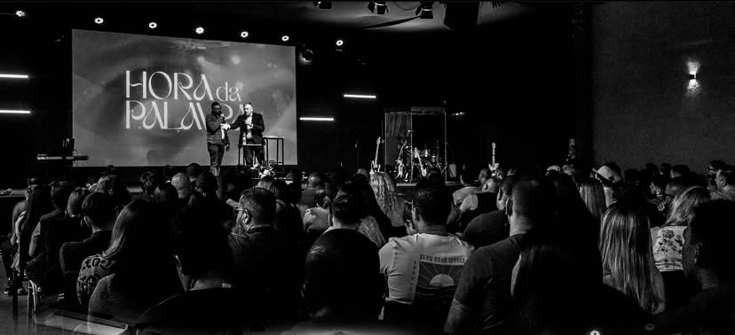

Acreditamos que há apenas um Deus verdadeiro que é o eterno Rei, Criador e Redentor de tudo o que é. Ele é perfeitamente santo, justo, amoroso e verdadeiro. Ele se revelou eternamente autoexistente - um ser em três pessoas: Deus Pai, Deus Filho e Deus Espírito Santo. Acreditamos que a Bíblia é a inspirada e única Palavra infalível e autoritativa de Deus. Acreditamos que a humanidade foi criada à imagem de Deus para conhecê-Lo e desfrutá-Lo, mas rejeitamos voluntariamente o Senhorio e a glória de Deus para os quais fomos destinados. Por causa disso, a doença, a morte e o julgamento entraram no mundo e agora a criação experimenta os efeitos e as consequências do pecado.
Acreditamos no Senhor Jesus Cristo, o único Filho de Deus, foi concebido pelo Espírito Santo, nasceu da virgem Maria e é o Ungido de Deus, capacitado pelo Espírito Santo para inaugurar o reino de Deus na Terra. Ele foi crucificado pelos nossos pecados, morreu, foi sepultado, ressuscitou e ascendeu ao céu, e agora está vivo na presença de Deus Pai e em Seu povo. Ele é "verdadeiro Deus" e "verdadeiro homem".
Acreditamos que somos salvos pela graça de Deus, por meio da fé na pessoa e obra de Jesus Cristo. Qualquer pessoa pode ser restaurada à comunhão com Deus por meio do arrependimento, da fé e do recebimento de Jesus como seu Salvador e Senhor. O Espírito Santo nos convence, regenera, justifica, santifica e adota à medida que entramos no reino de Deus como Seus filhos e filhas. Acreditamos no poder santificador contínuo do Espírito Santo, por cuja habitação o cristão é capacitado a viver uma vida santa e a ministrar sobrenaturalmente. O batismo do Espírito Santo, de acordo com Atos 1:4-8 e 2:4, é derramado sobre os crentes para que tenham o poder de Deus para serem Suas testemunhas.
Acreditamos que a obra vitoriosa e redentora de Cristo na cruz proporciona liberdade do poder do inimigo - pecado, mentiras, doenças e tormento. Acreditamos que a Igreja é composta por todos os que depositam sua fé em Jesus Cristo. Ele deu à Sua Igreja as ordenanças do batismo e da comunhão. A Igreja existe para continuar o ministério de Jesus Cristo e avançar ainda mais Seu reino, desfazendo as obras do inimigo, pregando e vivendo as boas novas do amor de Deus e discipulando as nações - batizando e ensinando-as a amar e obedecer a Deus.
Acreditamos no governo cada vez maior de Deus e na Bem-Aventurada Esperança, que é o retorno glorioso e visível do Senhor Jesus Cristo para governar e reinar com Sua noiva vencedora - a Igreja. Acreditamos que o céu e o inferno são lugares reais. Haverá uma ressurreição dos perdidos e dos salvos, um para a morte eterna e o outro para a vida eterna.
Intimidade com Deus Buscar a presença de Deus é algo prioritário em nossas vidas. Um estilo de vida de adoração, oração e leitura da palavra de Deus é a base para a intimidade com o nosso Deus. Manifestamos em público o que somos no secreto. Mt 6.6 | Sl 27.4 | Sl 63.1-8 | Lc 7.37-38 | II Cor 3:18
Embasamento Bíblico Tudo o que fazemos, falamos e vivemos está alinhado aos valores, princípios da palavra de Deus, a Bíblia. Ela é a verdade absoluta e imutável que direciona nossas vidas. II Tm 3.16-17 | Jo 8.31-32 | II Co 13.8 | Hb 4.12 | Sl 119.105 | Mt 5.18-19
Fluir no Sobrenatural Buscamos viver uma vida naturalmente sobrenatural. Como filhos de Deus sabemos que enquanto não chegarmos nos céus, devemos trazer a realidade dos céus aqui na Terra. Mc 16.15-18 | Zc 4.6 | At 1.8 | Jo 14.12 | I Co 2.9-15 | I Co 12.4-11 | I Co 14.1-6
Discipulado Entendemos a importância da grande comissão e temos a responsabilidade de discipular pessoas e discipular nações. Formamos discípulos que manifestam as obras de Cristo e carregam o Seu caráter. Mt 28.19 | Mc 16.15 | Gl 5.22-23 | Jo 13.35 | I Co 11.1
Liderança Sabemos que cada um nasceu para um tempo como este, para ocupar e influenciar sua esfera na sociedade, tendo sua liderança baseada no modelo de Jesus, que é pelo exemplo e pelo servir. Is 2.2-3 | Mt 20.25-28 | Gn 1.28 | Dt 28.13 | Jo 13.13-17
Honra O nosso teto é o piso da próxima geração. Honramos o nosso passado e vivemos por um legado. Reconhecemos e valorizamos mais as virtudes do que os defeitos. Ex 20.12 | Dt 5.16 | Sl 133.1-3 | Rm 12.10
Excelência Fazemos o melhor com nosso tempo, talento e tesouro assim como no nosso corpo, alma e espírito, porque fazemos tudo para Deus e para a Sua glória. Cl 3.23-24 | Dn 5.14 | Dn 6.3 | Ex 31.2-6 | Lc 16.10-13
Deus é bom, então precisamos sonhar grande.
Nada é impossível, então uma grande parte da nossa vida é planejada em torno de correr riscos.
Tudo o que precisamos foi resolvido na cruz, então precisamos chegar a um ponto em que podemos confiar nele em tudo.
Deus nos criou cada um para sermos significativos, por isso devemos servir bem.